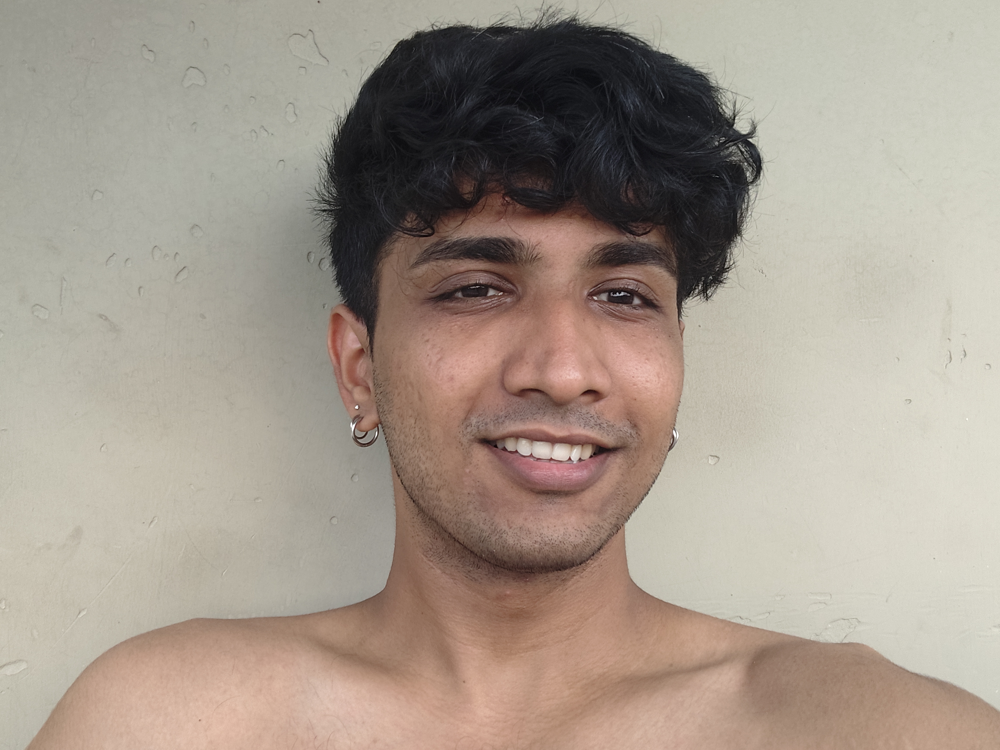
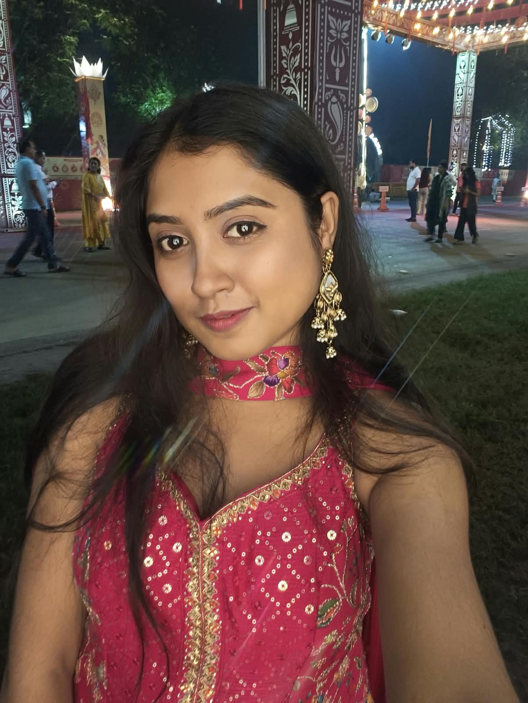

A little universe, just for us
Two hearts.
One world. ♥
Somewhere on this beautiful planet, there's a girl who makes my whole world feel different.
This little universe is for you, Susu. ✨
Somewhere on this beautiful planet, there's a girl who makes my whole world feel different.
This little universe is for you, Susu. ✨

Different cities. Different skies. Still sharing one world — and somehow, my favourite part of it is you.
Tap to travel from space towards India.
You are far from me, but never far from my heart. ♥


Even with all those kilometres between us, there's a line that always leads my heart to you.
One day, we won't have to count kilometres or miss each other through a screen. I'll get to hold your hand, look into your eyes, and make all this waiting worth it.
Until then, every kilometre is worth it because it's you. ♥
No matter the distance, you're my favourite place.
Made with love, just for Susu ✨